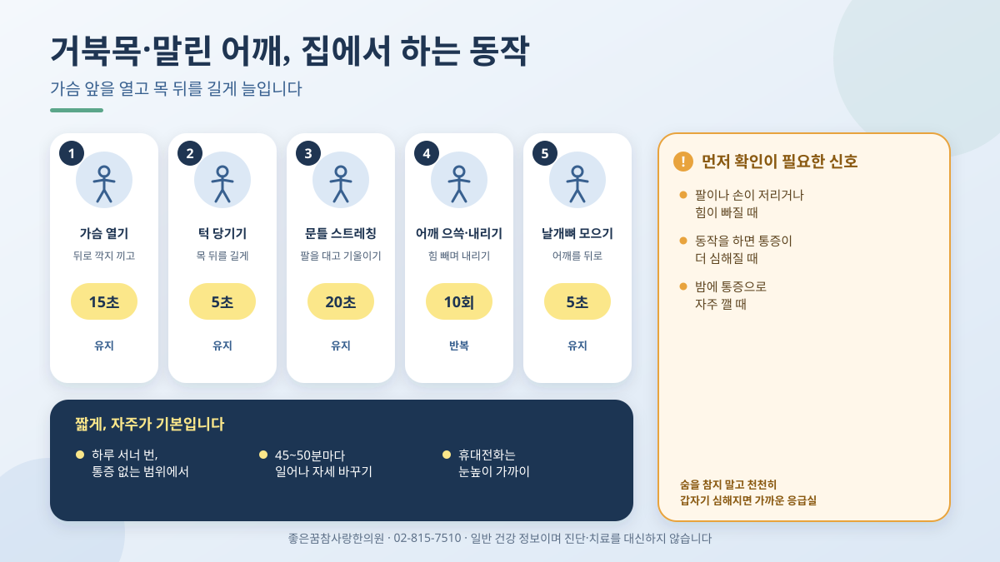

가슴을 열고 목 뒤를 길게 하는 가벼운 스트레칭을 하루 서너 번 짧게 해 볼 수 있으며, 팔 저림이 있거나 동작 중 통증이 심해지면 멈추고 진료를 권합니다.
여쭙는 것
- 목, 어깨, 날개뼈 사이 중 어디가 가장 뻐근한가요?
- 하루에 화면을 보는 시간이 얼마나 되나요?
- 팔이나 손이 저린 적이 있나요?
한의원에서 함께 살필 것
- 스마트폰을 오래 보면 목과 어깨가 뭉치는 경우 목과 어깨의 긴장을 함께 살핍니다.
- 어깨가 앞으로 말리는 느낌이 드는 경우 자세를 함께 살핍니다.
- 뒷목이 뻐근해 두통이 오는 경우 근육의 긴장을 함께 살핍니다.
먼저 확인이 필요한 신호
- 팔이나 손이 저리거나 힘이 빠지는 경우
- 동작을 하면 통증이 심해지는 경우
- 밤에 통증으로 자주 깨는 경우

거북목과 말린 어깨에는 가슴 앞쪽을 열고 목 뒤를 길게 늘이는 동작을 하루 서너 번, 짧게 자주 하는 것이 기본입니다. 휴대전화와 컴퓨터를 오래 보면 고개가 앞으로 나가고 어깨가 말리기 쉽습니다. 무리하지 않는 범위에서 짧게 자주 하는 것이 중요합니다.
왜 이런 불편이 생길 수 있나요
- 고개가 앞으로 나갈수록 목 뒤 근육이 머리 무게를 더 많이 버텨야 해 뒷목과 어깨가 쉽게 뻣뻣해집니다.
- 화면을 오래 보면 어깨가 앞으로 말리고 가슴 앞쪽 근육이 짧아진 채로 굳는 경우가 많습니다.
- 등 위쪽이 굽으면 날개뼈 사이가 늘어나 당기고, 숨이 얕아지는 느낌이 들기도 합니다.
- 베개 높이나 엎드려 휴대전화를 보는 습관이 밤사이 긴장을 이어 가게 하기도 합니다.

먼저 이렇게 여쭙니다
- 목, 어깨, 날개뼈 사이 중 어디가 가장 뻐근한가요?
- 하루에 화면을 보는 시간이 얼마나 되나요?
- 팔이나 손이 저린 적이 있나요?
- 어느 시간대에 더 힘든가요?
- 잘 때 베개 높이는 어떤가요, 엎드려 휴대전화를 보나요?
집에서 해 볼 수 있는 동작
- 가슴 열기: 양손을 뒤로 깍지 끼고 가슴을 펴며 15초 유지
- 턱 당기기: 턱을 살짝 당겨 목 뒤를 길게 하고 5초 유지
- 문틀 스트레칭: 팔을 문틀에 대고 몸을 앞으로 기울여 20초 유지
- 어깨 으쓱했다 내리기: 어깨를 올렸다가 힘을 빼며 내리기 10회
- 날개뼈 모으기: 어깨를 뒤로 모아 5초 유지
- 45~50분마다 일어나 자세 바꾸기
- 모든 동작은 통증 없는 범위에서 천천히, 숨을 참지 말고 하기
- 휴대전화는 눈높이 가까이 들고 보고, 노트북은 받침대로 화면을 올리기

한의원에서 함께 살필 수 있는 경우
- 스마트폰을 오래 보면 목과 어깨가 뭉치는 경우 목과 어깨의 긴장을 함께 살핍니다.
- 어깨가 앞으로 말리는 느낌이 드는 경우 자세를 함께 살핍니다.
- 뒷목이 뻐근해 두통이 오는 경우 근육의 긴장을 함께 살핍니다.
좋은꿈참사랑한의원에서는 먼저 어떤 동작에서 불편한지 충분히 듣고, 필요하다고 판단될 때 진맥이나 초음파 같은 방법으로 살핀 뒤 상태에 맞춰 침·약침·추나 등을 정합니다. 귀가 전에는 집에서 지켜볼 점과 다음에 확인할 일을 알려 드립니다.
이렇게 기록해 오시면 상담이 쉬워집니다
- 하루 화면을 보는 시간(휴대전화의 사용 시간 기록을 활용)
- 뻐근함이 가장 심한 시간대와 부위
- 팔이나 손 저림이 있다면 어느 손가락 쪽인지
- 해 본 스트레칭과 그 뒤의 느낌

이런 증상은 먼저 확인이 필요합니다
- 팔이나 손이 저리거나 힘이 빠지는 경우
- 동작을 하면 통증이 심해지는 경우
- 밤에 통증으로 자주 깨는 경우
복용 중인 약은 처방한 의사와 상의 없이 줄이거나 끊지 않습니다. 위 신호가 있거나 갑자기 심해지면 한의원 진료를 기다리지 말고 119나 가까운 응급실을 이용하세요.
한눈에 보는 표
| 구분 | 핵심 |
|---|---|
| 여쭙는 것 | 목, 어깨, 날개뼈 사이 중 어디가 가장 뻐근한가요? 하루에 화면을 보는 시간이 얼마나 되나요? |
| 한의원에서 함께 살필 것 | 스마트폰을 오래 보면 목과 어깨가 뭉치는 경우 목과 어깨의 긴장을 함께 살핍니다. 어깨가 앞으로 말리는 느낌이 드는 경우 자세를 함께 살핍니다. |
| 먼저 확인이 필요한 신호 | 팔이나 손이 저리거나 힘이 빠지는 경우 동작을 하면 통증이 심해지는 경우 |
자주 묻는 질문
하루에 몇 번 해야 하나요?
무리 없이 하루 서너 번, 한 동작당 짧게 하는 것을 권하는 경우가 많습니다.
하다가 아프면 어떻게 하나요?
통증이 생기면 멈추고 범위를 줄이며, 계속되면 상담을 권합니다.
한의원에서는 무엇을 하나요?
자세와 움직임을 살피고 필요한 방법을 상의합니다.
자세 교정 밴드를 차면 도움이 되나요?
잠깐 자세를 의식하는 데 쓸 수는 있지만, 오래 기대기보다 자주 일어나 자세를 바꾸고 스트레칭을 하는 쪽을 권합니다.
이 글은 일반적인 건강 정보이며 개인의 진단이나 치료를 대신하지 않습니다. 증상이 있거나 복용 중인 약이 있다면 진료를 통해 확인하세요. 치료 효과는 개인마다 다를 수 있습니다.
작성 기준: 일반적으로 알려져 있는 건강 정보를 참고해 정리했습니다(대표원장 감수). 증상 기록은 1~2주 동안 하루 1회, 비슷한 시간에 적어 오시면 지난 상태와 비교하기 쉽습니다.
좋은꿈참사랑한의원은 재진 때 지난번 이야기부터 이어서 여쭙니다. 진료시간과 예약은 오시는 길에서 확인하세요.